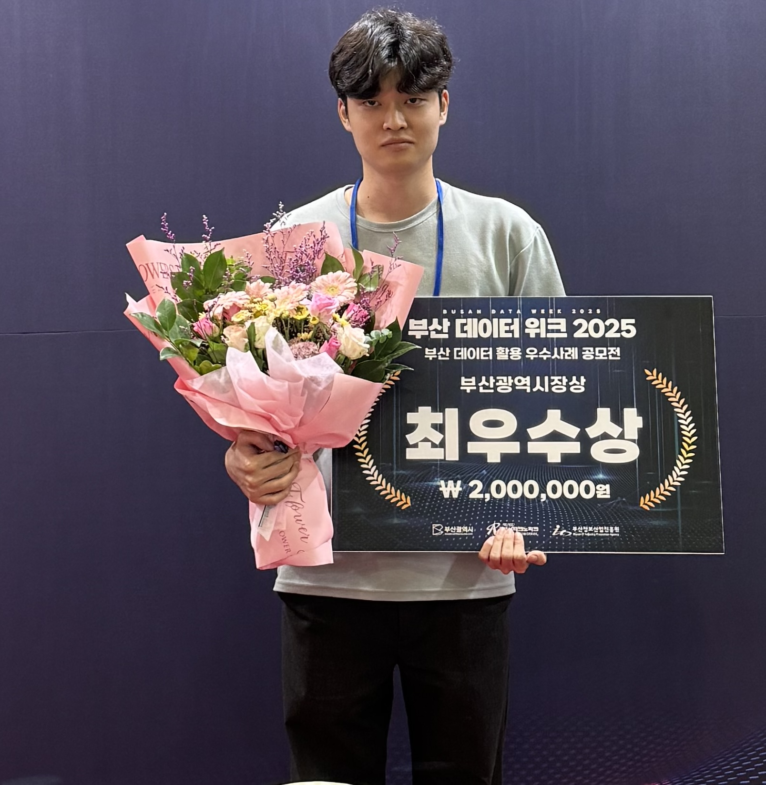

Fruition
업로드한 문서를 LLM이 Wiki로 정리하고, RAG 기반으로 원문 근거를 찾아 답변하거나 자연어로 문서를 편집하는 AI 워크스페이스입니다.
GitHub · local-pilot ↗GitHub · AI 분리 저장소 ↗MSA 초기 설계와 피드백 반영 과정 ↗BACKEND / AI APPLICATION
가설을 실험으로 확인하고, 결과가 달라진 원인을 찾아 다음 개선으로 연결합니다.
AI의 정확도와 비용, 처리 시간을 함께 살피며 서비스에 맞는 구현을 선택합니다.
손상 영역 복원과 전체 AI 변환을 비교한 뒤 본문·표·수식의 처리 경로를 분리. 내부 평가에서 PDF 내용 보존 통과율 개선.
기존 하이브리드 검색 대비 답이 있는 80문항의 근거 충족 건수 53 → 73건. Jev 도입 후 후보 수와 병렬 처리 조정으로 시간 중앙값 9.090초 → 2.251초 단축.
의미 단위 블럭으로 데이터 분할하여 중복 제거, 누락된 5%는 성분별 보완, GPT Batch API 변환, 블럭과 약품 id 매핑으로 데이터 파이프라인 구축.
업로드한 문서를 LLM이 Wiki로 정리하고, RAG 기반으로 원문 근거를 찾아 답변하거나 자연어로 문서를 편집하는 AI 워크스페이스입니다.
GitHub · local-pilot ↗GitHub · AI 분리 저장소 ↗MSA 초기 설계와 피드백 반영 과정 ↗의약품 정보를 쉬운 말로 안내하고, 사용자·가족의 복약 정보와 일정 관리를 돕는 개인 맞춤 AI 복약 서비스입니다.
GitHub 저장소 ↗Rust 기반 HWP/HWPX 프로젝트의 오류 분석, 수정안 제출과 CI 대응. 그림·표·도형의 textFlow 속성이 저장 후 초기화되는 오류를 수정했습니다.
GitHub 저장소 ↗ PR #1213 · 병합 ↗ PR #1351 · 제출 ↗ 크게 보기 ↗
크게 보기 ↗Backend 멘티 및 멘토. 멘티 12명 대상 6회 멘토링과 코드 리뷰. HTTP·Servlet·REST API·DB 기초를 보강하는 커리큘럼 개편에 참여했습니다.
APPTIVE 백엔드 멘토 공로상 · 2026.01.09 ↗ 크게 보기 ↗
크게 보기 ↗부산대학교 대표 전시팀으로 Pilltip 부스를 운영하고 서비스 시연과 기술 질의응답을 진행했습니다.
전시 현장 사진 ↗평균 학점 4.12 / 4.5
평균 학점 4.2 / 4.5
한국산업인력공단
개발한 서비스를 전시하고, 프로젝트의 결과를 공유했습니다. 사진을 누르면 원본을 볼 수 있습니다.
